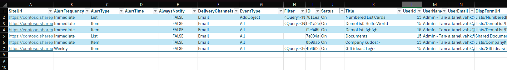

SharePoint Online - Export SharePoint Alerts
Summary
This PowerShell script scans your SharePoint Online environment and exports a list of all classic SharePoint Alerts configured by users across all site collections.
This is especially useful in preparation for the upcoming retirement of SharePoint Alerts. The script helps administrators audit alert usage, review who is using alerts and where, and prepare to transition to modern alternatives such as SharePoint Rules or Power Automate.
SharePoint Alerts Retirement Timeline
Microsoft has announced the deprecation and removal of classic SharePoint Alerts. Use this script to assess current alert usage and prepare for a smooth transition.
Important Dates to Keep in Mind
- July 2025 – Creation of new SharePoint alerts disabled for new tenants
- September 2025 – Creation of new alerts disabled for existing tenants
- October 2025 – Existing alerts will expire after 30 days (they can be manually re-enabled)
- July 2026 – SharePoint Alerts removed entirely
After these dates, organisations should use modern alternatives like SharePoint Rules or Power Automate.
Features
- Connects to all site collections in your tenant
- Retrieves classic alerts created by users
- Outputs a clean, structured CSV file with alert metadata
- Logs connection or permission errors to a separate file
Sample Output
Below is an example of the exported SharePointAlerts_Report.csv when opened in Excel:

# ============================================================
# SharePoint Alerts Export Script
# Preferred Auth: Certificate
# Alternate Auth: Interactive
# ============================================================
# === Configurable Variables ===
$clientId = "<your-client-id>"
$certPath = "<path-to-certificate-folder>"
$certName = "<your-certificate-name>.pfx"
$tenant = "<your-tenant-id>"
$basePath = "<your-output-directory>" # Example: "C:\Reports"
$outputCsvName = "SharePointAlerts_Report.csv"
$errorLogName = "SharePointAlerts_Errors.csv"
$tenantAdminUrl = "https://<your-tenant>-admin.sharepoint.com"
$outputCsvPath = Join-Path -Path $basePath -ChildPath $outputCsvName
$errorLogPath = Join-Path -Path $basePath -ChildPath $errorLogName
# === Create output folder if it doesn't exist ===
if (-not (Test-Path -Path $basePath)) {
New-Item -ItemType Directory -Path $basePath -Force | Out-Null
}
# === Arrays to collect results and errors ===
$alertResults = @()
$errorLog = @()
# === Connect to SharePoint Admin Center ===
# Preferred: Certificate-based authentication
Connect-PnPOnline -Url $tenantAdminUrl -ClientId $clientId -Tenant $tenant -CertificatePath "$certPath\$certName"
# Alternate: Interactive authentication
# Connect-PnPOnline -Url $tenantAdminUrl -Interactive
# === Retrieve all site collections ===
$sites = Get-PnPTenantSite
foreach ($site in $sites) {
Write-Host "`nProcessing site: $($site.Url)" -ForegroundColor Cyan
# === Connect to each site ===
# Preferred: Certificate-based authentication
Connect-PnPOnline -Url $site.Url -ClientId $clientId -Tenant $tenant -CertificatePath "$certPath\$certName"
# Alternate (manual run): Interactive authentication
# Connect-PnPOnline -Url $site.Url -Interactive
try {
$alerts = Get-PnPAlert -AllUsers -InformationAction SilentlyContinue
if ($alerts) {
Write-Host "Found $($alerts.Count) alerts in: $($site.Url)" -ForegroundColor Green
foreach ($alert in $alerts) {
$user = Get-PnPUser -Identity $alert.UserId
$alertResults += [PSCustomObject]@{
SiteUrl = $site.Url
AlertFrequency = $alert.AlertFrequency
AlertType = $alert.AlertType
AlertTime = $alert.AlertTime
AlwaysNotify = $alert.AlwaysNotify
DeliveryChannels = $alert.DeliveryChannels
EventType = $alert.EventType
Filter = $alert.Filter
ID = $alert.ID
Status = $alert.Status
Title = $alert.Title
UserId = $alert.UserId
UserName = $user.Title
UserEmail = $user.Email
DispFormUrl = $alert.Properties["dispformurl"]
}
}
} else {
Write-Host "No alerts found." -ForegroundColor Yellow
}
}
catch {
$errorMessage = "Error retrieving alerts for site: $($site.Url)."
Write-Host $errorMessage -ForegroundColor Red
$errorLog += [PSCustomObject]@{
SiteUrl = $site.Url
ErrorMessage = $_.Exception.Message
ErrorDetails = $_.Exception.StackTrace
}
}
}
# === Export results to CSV ===
$alertResults | Export-Csv -Path $outputCsvPath -NoTypeInformation -Encoding UTF8
Write-Host "`nReport exported to: $outputCsvPath" -ForegroundColor Green
# === Export errors if any ===
if ($errorLog.Count -gt 0) {
$errorLog | Export-Csv -Path $errorLogPath -NoTypeInformation -Encoding UTF8
Write-Host "Error log exported to: $errorLogPath" -ForegroundColor Yellow
} else {
Write-Host "No errors encountered." -ForegroundColor Green
}
# === Disconnect session ===
Disconnect-PnPOnline
Check out the PnP PowerShell to learn more at: https://aka.ms/pnp/powershell
The way you login into PnP PowerShell has changed please read PnP Management Shell EntraID app is deleted : what should I do ?
Contributors
| Author |
|---|
| Tanel Vahk |
Disclaimer
THESE SAMPLES ARE PROVIDED AS IS WITHOUT WARRANTY OF ANY KIND, EITHER EXPRESS OR IMPLIED, INCLUDING ANY IMPLIED WARRANTIES OF FITNESS FOR A PARTICULAR PURPOSE, MERCHANTABILITY, OR NON-INFRINGEMENT.